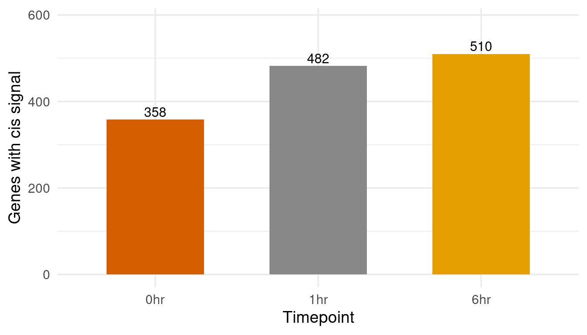
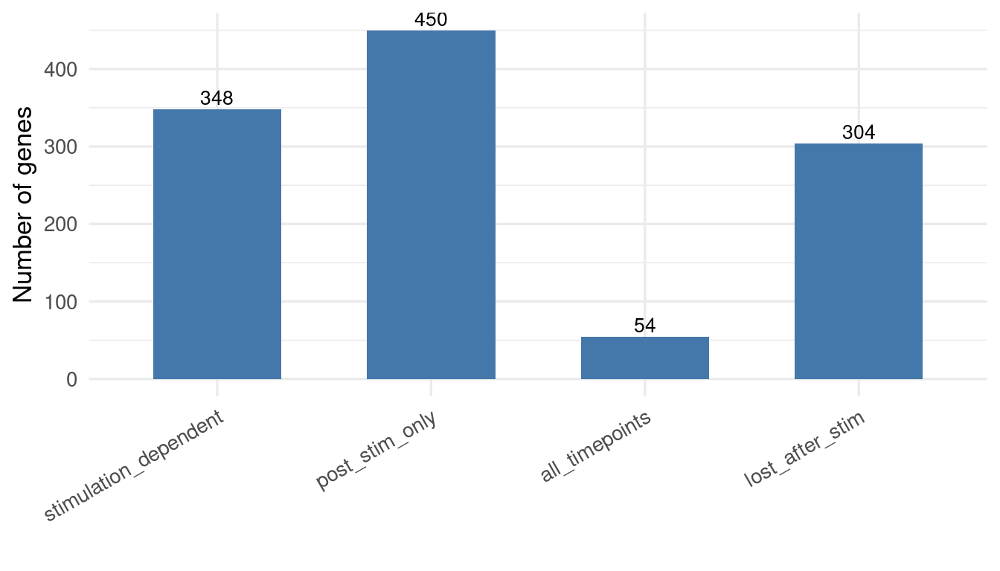
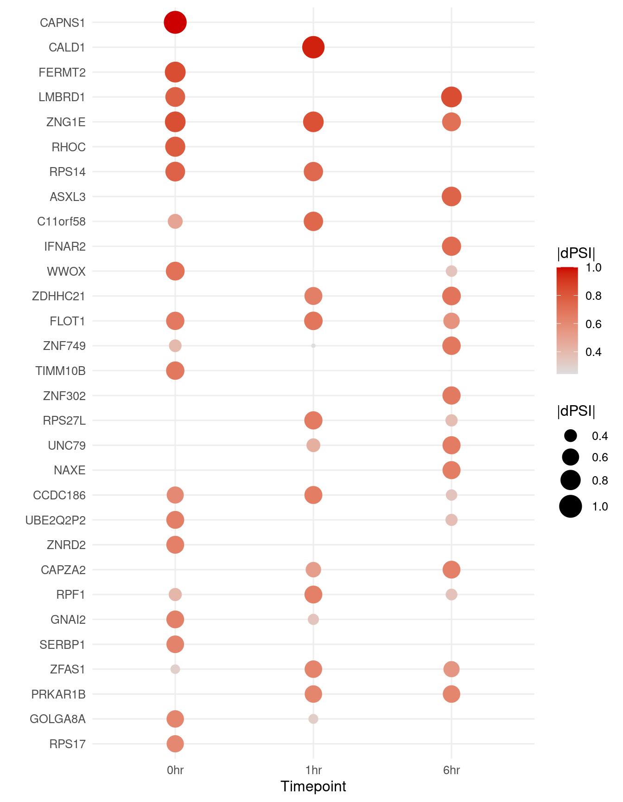
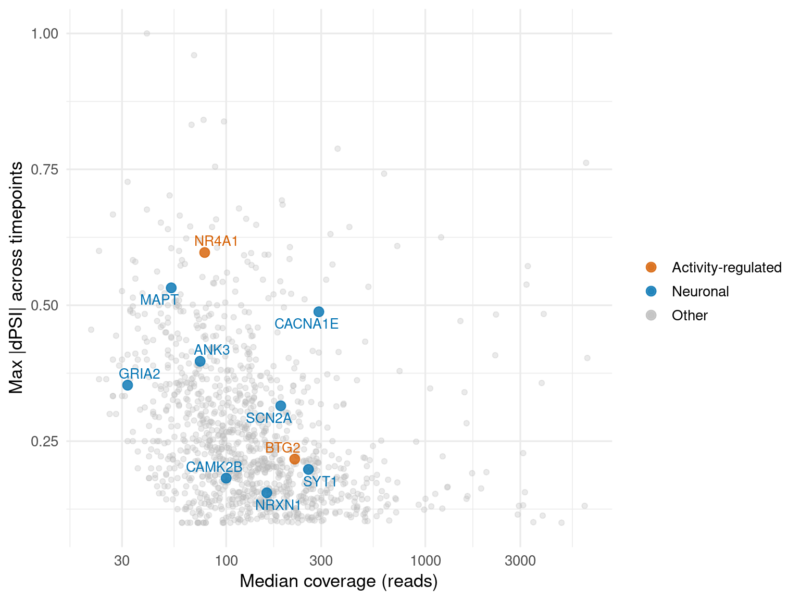
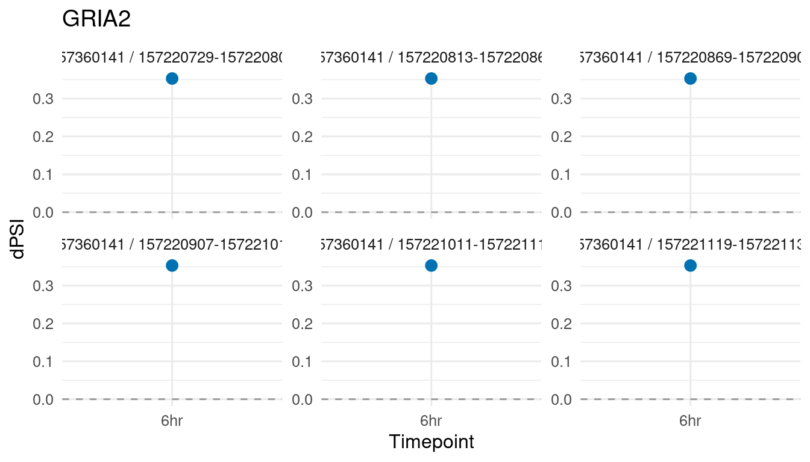
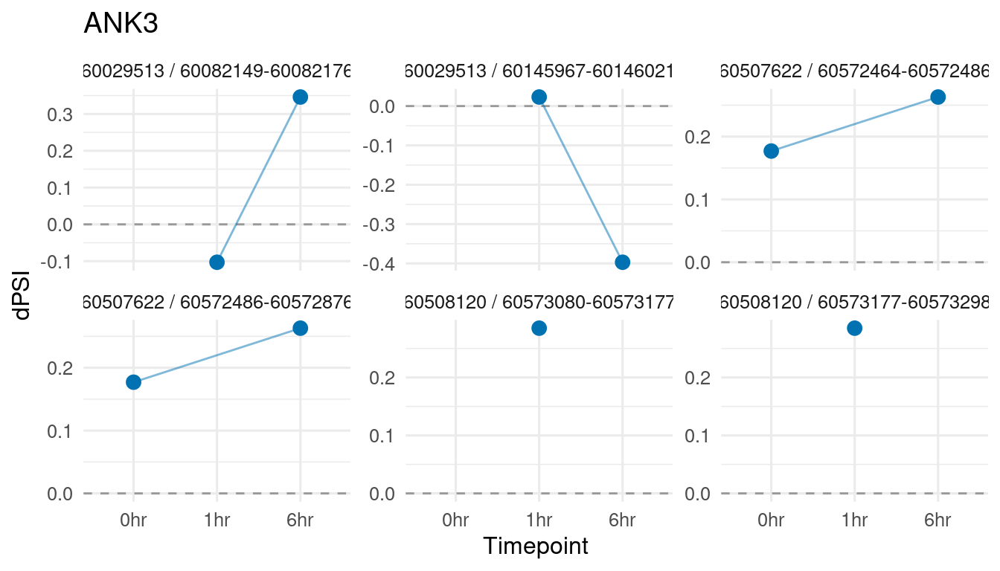
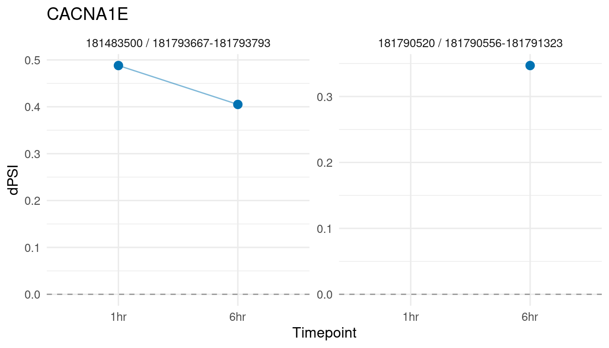
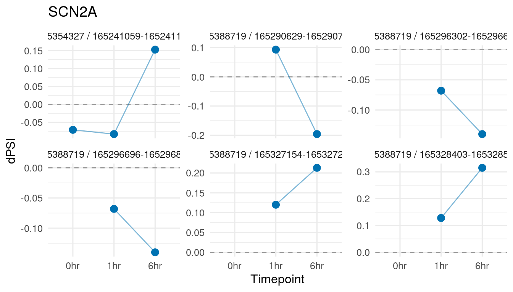
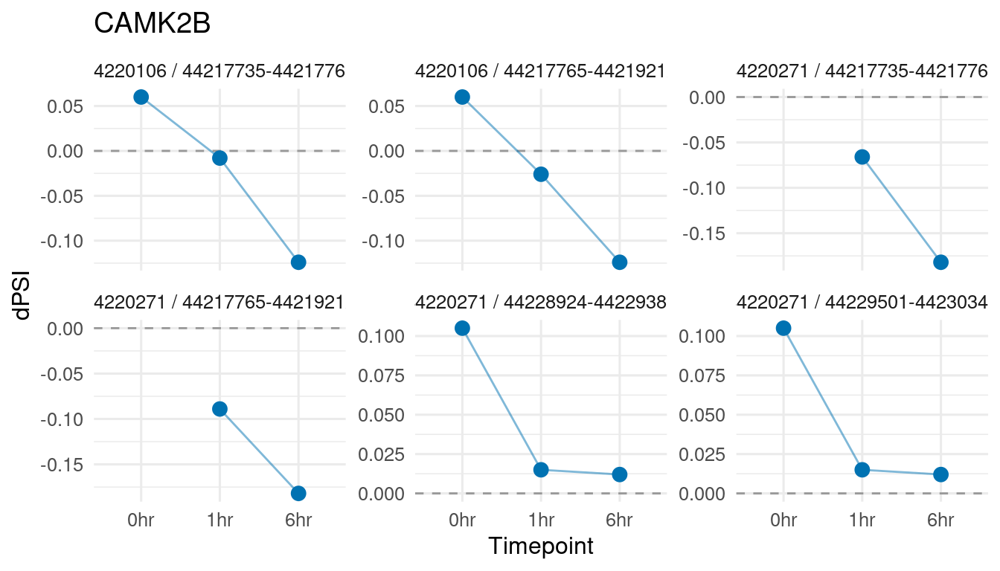
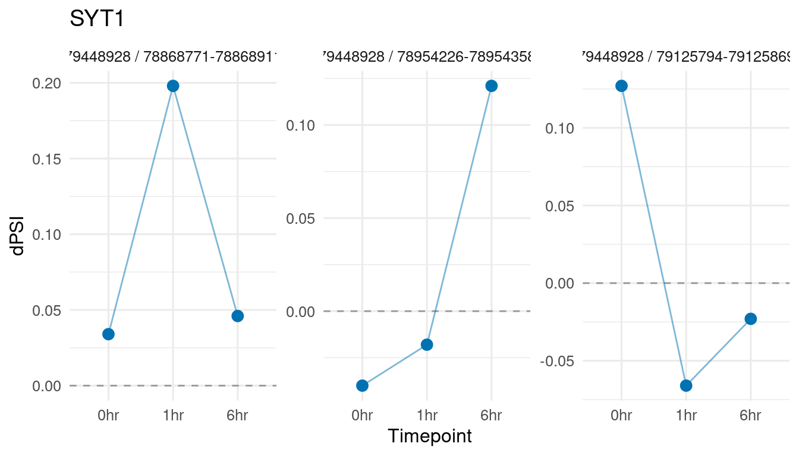

Last updated: 2026-09-28
Checks: 6 1
Knit directory: long_read_rna/
This reproducible R Markdown analysis was created with workflowr (version 1.7.1). The Checks tab describes the reproducibility checks that were applied when the results were created. The Past versions tab lists the development history.
The R Markdown file has unstaged changes. To know which version of
the R Markdown file created these results, you’ll want to first commit
it to the Git repo. If you’re still working on the analysis, you can
ignore this warning. When you’re finished, you can run
wflow_publish to commit the R Markdown file and build the
HTML.
Great job! The global environment was empty. Objects defined in the global environment can affect the analysis in your R Markdown file in unknown ways. For reproduciblity it’s best to always run the code in an empty environment.
The command set.seed(20260908) was run prior to running
the code in the R Markdown file. Setting a seed ensures that any results
that rely on randomness, e.g. subsampling or permutations, are
reproducible.
Great job! Recording the operating system, R version, and package versions is critical for reproducibility.
Nice! There were no cached chunks for this analysis, so you can be confident that you successfully produced the results during this run.
Great job! Using relative paths to the files within your workflowr project makes it easier to run your code on other machines.
Great! You are using Git for version control. Tracking code development and connecting the code version to the results is critical for reproducibility.
The results in this page were generated with repository version aaf8c9a. See the Past versions tab to see a history of the changes made to the R Markdown and HTML files.
Note that you need to be careful to ensure that all relevant files for
the analysis have been committed to Git prior to generating the results
(you can use wflow_publish or
wflow_git_commit). workflowr only checks the R Markdown
file, but you know if there are other scripts or data files that it
depends on. Below is the status of the Git repository when the results
were generated:
Unstaged changes:
Modified: analysis/isolaser_genome_wide.Rmd
Note that any generated files, e.g. HTML, png, CSS, etc., are not included in this status report because it is ok for generated content to have uncommitted changes.
These are the previous versions of the repository in which changes were
made to the R Markdown (analysis/isolaser_genome_wide.Rmd)
and HTML (docs/isolaser_genome_wide.html) files. If you’ve
configured a remote Git repository (see ?wflow_git_remote),
click on the hyperlinks in the table below to view the files as they
were in that past version.
| File | Version | Author | Date | Message |
|---|---|---|---|---|
| Rmd | aaf8c9a | XSun | 2026-09-28 | update |
| html | aaf8c9a | XSun | 2026-09-28 | update |
We ran isoLASER jointly across four donors on all 22 autosomes, at each of the three timepoints (0, 1, and 6 hours after stimulation). isoLASER phases reads onto haplotypes using heterozygous variants it discovers in the RNA, then tests whether the two copies of each gene splice differently — allele-specific splicing, reported as dPSI (the difference in Percent Spliced In between haplotypes).
The model used is --platform Nanopore, which loads the
default GM12878_ONT_ROC classifier. A second ONT classifier
(GTEx_ONT_F1) ships with isoLASER but is currently
commented out upstream; we tested both and found F1 recovers more
heterozygous sites, but use the default here pending clarification from
the developers.
Four filters were applied to the raw isoLASER cis calls:
Effect size: |dPSI| >= 0.10. Without this, many statistically significant calls have dPSI of 0.01–0.02, driven by high read depth rather than a meaningful splicing difference.
Clustered variants removed. Real heterozygous SNPs occur roughly once per kilobase. When multiple variants cluster within 30 bp, they are likely sequencing errors in difficult sequence. 34% of all variants fall in such clusters.
Per-donor allelic balance. At least one donor must have allelic balance 0.25–0.75 and read depth >= 10 at the phasing variant. This is checked per donor, not averaged across donors — an average can hide a case where no individual donor is heterozygous (e.g., one reference-only and one alternate-only donor averaging to 0.5).
Minimum exonic part length >= 10 bp. The exon model splits overlapping annotations into non-overlapping parts, which can create fragments of 1–3 bp. Allelic balance measured over such short regions is unreliable.
After filtering: 1,156 genes with at least one allele-specific splicing event. Each gene is represented by its strongest (gene, variant, exonic part) combination, tracked as a fixed unit across all three timepoints.

| Version | Author | Date |
|---|---|---|
| aaf8c9a | XSun | 2026-09-28 |
For each gene, we classified its signal across the three timepoints.

| Version | Author | Date |
|---|---|---|
| aaf8c9a | XSun | 2026-09-28 |
| Pattern | Description | Genes |
|---|---|---|
| stimulation_dependent | Tested at 0 hr with no signal; signal appears after stimulation | 348 |
| post_stim_only | Not tested at 0 hr (no reads or no variant); signal only at 1 or 6 hr — absence at baseline is not established | 450 |
| all_timepoints | Signal at all three timepoints (constitutive) | 54 |
| lost_after_stim | Signal at 0 hr but absent at one or both stimulated timepoints | 304 |
Of the genes with a post-stimulation signal, 348 were tested at baseline with no signal — these are the strongest candidates for stimulation-dependent allele-specific splicing. The remaining 450 were not tested at 0 hr at all (the gene was not expressed, had no heterozygous variant, or failed a filter), so baseline absence is not established.

| Version | Author | Date |
|---|---|---|
| aaf8c9a | XSun | 2026-09-28 |
Top 30 genes ranked by maximum |dPSI|. Each gene is represented by a single (variant, exonic part) combination tracked across all three timepoints. Missing dots mean that combination had no signal at that timepoint.
| Gene | 0 hr | 1 hr | 6 hr | Pattern |
|---|---|---|---|---|
| CAPNS1 | 1.000 | 0.000 | 0.000 | lost_after_stim |
| CALD1 | 0.000 | 0.960 | 0.000 | post_stim_only |
| FERMT2 | 0.841 | 0.000 | 0.000 | lost_after_stim |
| LMBRD1 | 0.769 | 0.000 | 0.838 | lost_after_stim |
| ZNG1E | 0.832 | 0.826 | 0.706 | all_timepoints |
| RHOC | 0.788 | 0.000 | 0.000 | lost_after_stim |
| RPS14 | 0.762 | 0.737 | 0.000 | lost_after_stim |
| ASXL3 | 0.000 | 0.000 | 0.755 | stimulation_dependent |
| C11orf58 | 0.487 | 0.742 | 0.000 | lost_after_stim |
| IFNAR2 | 0.000 | 0.000 | 0.727 | post_stim_only |
| WWOX | 0.702 | 0.000 | 0.355 | lost_after_stim |
| ZDHHC21 | 0.000 | 0.649 | 0.693 | post_stim_only |
| FLOT1 | 0.672 | 0.685 | 0.562 | all_timepoints |
| ZNF749 | 0.397 | 0.243 | 0.678 | all_timepoints |
| TIMM10B | 0.676 | 0.000 | 0.000 | lost_after_stim |
| ZNF302 | 0.000 | 0.000 | 0.667 | post_stim_only |
| RPS27L | 0.000 | 0.665 | 0.381 | stimulation_dependent |
| UNC79 | 0.000 | 0.441 | 0.659 | stimulation_dependent |
| NAXE | 0.000 | 0.000 | 0.658 | post_stim_only |
| CCDC186 | 0.600 | 0.652 | 0.352 | all_timepoints |
| UBE2Q2P2 | 0.648 | 0.000 | 0.376 | lost_after_stim |
| ZNRD2 | 0.645 | 0.000 | 0.000 | lost_after_stim |
| CAPZA2 | 0.000 | 0.516 | 0.644 | stimulation_dependent |
| RPF1 | 0.413 | 0.644 | 0.363 | all_timepoints |
| GNAI2 | 0.640 | 0.346 | 0.000 | lost_after_stim |
| SERBP1 | 0.631 | 0.000 | 0.000 | lost_after_stim |
| ZFAS1 | 0.303 | 0.625 | 0.550 | all_timepoints |
| PRKAR1B | 0.000 | 0.621 | 0.623 | post_stim_only |
| GOLGA8A | 0.619 | 0.310 | 0.000 | lost_after_stim |
| RPS17 | 0.609 | 0.000 | 0.000 | lost_after_stim |

| Version | Author | Date |
|---|---|---|
| aaf8c9a | XSun | 2026-09-28 |
Labeled genes are from curated lists of activity-regulated immediate-early genes (orange) and neuronal-function genes (blue).
| Gene | Category | 0 hr | 1 hr | 6 hr | Pattern |
|---|---|---|---|---|---|
| NR4A1 | Activity-regulated | 0.000 | 0.597 | 0.000 | post_stim_only |
| MAPT | Neuronal | 0.532 | 0.000 | 0.000 | lost_after_stim |
| CACNA1E | Neuronal | 0.000 | 0.488 | 0.405 | post_stim_only |
| ANK3 | Neuronal | 0.000 | 0.000 | 0.397 | post_stim_only |
| GRIA2 | Neuronal | 0.000 | 0.000 | 0.353 | post_stim_only |
| SCN2A | Neuronal | 0.000 | 0.000 | 0.315 | post_stim_only |
| BTG2 | Activity-regulated | 0.000 | 0.000 | 0.217 | stimulation_dependent |
| SYT1 | Neuronal | 0.000 | 0.198 | 0.000 | stimulation_dependent |
| CAMK2B | Neuronal | 0.000 | 0.000 | 0.182 | post_stim_only |
| NRXN1 | Neuronal | 0.155 | 0.000 | 0.000 | lost_after_stim |
Most classic immediate-early genes (FOS, JUN, EGR1, ARC) are not testable by isoLASER — they are either single-exon genes, have no heterozygous variant in the four donors, or have too few spliced reads.

| Version | Author | Date |
|---|---|---|
| aaf8c9a | XSun | 2026-09-28 |

| Version | Author | Date |
|---|---|---|
| aaf8c9a | XSun | 2026-09-28 |

| Version | Author | Date |
|---|---|---|
| aaf8c9a | XSun | 2026-09-28 |

| Version | Author | Date |
|---|---|---|
| aaf8c9a | XSun | 2026-09-28 |

| Version | Author | Date |
|---|---|---|
| aaf8c9a | XSun | 2026-09-28 |

| Version | Author | Date |
|---|---|---|
| aaf8c9a | XSun | 2026-09-28 |
Each panel shows one (variant, exonic part) combination tracked across timepoints. The variant position and exonic part coordinates are in the facet label (variant position / part start-end). This ensures each panel represents a single splicing event, not a mixture.
This analysis identifies 1156 genes with allele-specific splicing after quality filtering. Each gene is represented by a fixed (variant, exonic part) combination tracked across all three timepoints, so the timepoint comparison is always between the same splicing event. 348 genes were tested at baseline with no signal and then showed a signal after stimulation — these are the strongest candidates for stimulation-dependent allele-specific splicing. Another 450 genes have post-stimulation signals but were not tested at baseline, so stimulation dependence is not established for those.
The strongest neuronal hits are GRIA2 (AMPA receptor subunit, 6 hr only), ANK3 (spectrin adapter, all timepoints), CACNA1E (calcium channel, 6 hr only), and SCN2A (sodium channel, 6 hr only). These are genes with known alternative splicing in neurons, making the allele-specific signals plausible.
Caveats:
Related pages: variant validation, junction screen, isoLASER setup.
R version 4.2.0 (2022-04-22)
Platform: x86_64-pc-linux-gnu (64-bit)
Running under: Red Hat Enterprise Linux 8.10 (Ootpa)
Matrix products: default
BLAS/LAPACK: /software/openblas-0.3.13-el8-x86_64/lib/libopenblas_skylakexp-r0.3.13.so
locale:
[1] LC_CTYPE=C.UTF-8 LC_NUMERIC=C LC_TIME=C.UTF-8
[4] LC_COLLATE=C.UTF-8 LC_MONETARY=C.UTF-8 LC_MESSAGES=C.UTF-8
[7] LC_PAPER=C.UTF-8 LC_NAME=C LC_ADDRESS=C
[10] LC_TELEPHONE=C LC_MEASUREMENT=C.UTF-8 LC_IDENTIFICATION=C
attached base packages:
[1] stats graphics grDevices utils datasets methods base
other attached packages:
[1] ggrepel_0.9.3 ggplot2_3.4.2 data.table_1.14.4 workflowr_1.7.1
loaded via a namespace (and not attached):
[1] tidyselect_1.2.0 xfun_0.59 bslib_0.3.1 colorspace_2.0-3
[5] vctrs_0.6.1 generics_0.1.3 htmltools_0.5.7 yaml_2.3.5
[9] utf8_1.2.2 rlang_1.1.2 R.oo_1.24.0 later_1.3.0
[13] pillar_1.9.0 jquerylib_0.1.4 R.utils_2.11.0 glue_1.6.2
[17] withr_2.5.0 lifecycle_1.0.4 stringr_1.5.0 munsell_0.5.0
[21] gtable_0.3.0 R.methodsS3_1.8.1 evaluate_0.15 labeling_0.4.2
[25] knitr_1.51 callr_3.7.0 fastmap_1.1.0 httpuv_1.6.5
[29] ps_1.7.0 fansi_1.0.3 Rcpp_1.1.1-1.1 promises_1.2.0.1
[33] scales_1.2.0 jsonlite_2.0.0 farver_2.1.0 otel_0.2.0
[37] fs_1.5.2 digest_0.6.29 stringi_1.7.6 processx_3.5.3
[41] dplyr_1.1.2 getPass_0.2-2 rprojroot_2.0.3 grid_4.2.0
[45] cli_3.6.2 tools_4.2.0 magrittr_2.0.3 sass_0.4.1
[49] tibble_3.2.1 whisker_0.4 pkgconfig_2.0.3 rmarkdown_2.31
[53] httr_1.4.8 rstudioapi_0.14 R6_2.5.1 git2r_0.30.1
[57] compiler_4.2.0